China Employee Termination 2026: Pulse Risk-Register Brief for Foreign Employers
Key takeaways
- A live risk register is the most practical control tool when foreign teams handle multiple China termination cases in parallel.
- In China, route legality, evidence consistency, and payroll/tax closure are the top three risk categories to monitor daily.
- Risk scores should drive action ownership and escalation, not sit as static compliance notes.
- City-level legal-practice variation must be tracked as an active risk line in each case.
- This brief is impact-first; legal depth is provided in a secondary appendix.
What changed and why this matters now
When organizations run several exits in one quarter, risk usually rises through coordination failure rather than one dramatic legal mistake. Different teams own different pieces—HR owns communication, legal owns route confidence, payroll owns closure—but without a shared register, gaps appear late. A case that looked “green yesterday” can become high-risk after one contradiction, one script drift, or one payment mismatch.
This run uses a risk-register format (distinct from watchlist, myth/fact, matrix, switchboard, decision tree, checklist-ledger, and scorecard) to help foreign managers monitor risk movement in real time and allocate intervention effort where it matters most.
Plain-language legal context first
China employer-side termination is generally not an at-will process. It requires a supportable legal route, factually coherent records, and consistent procedural execution. Public legal anchors include the PRC Labor Contract Law framework, implementing regulation references (including Decree No. 535 context), and Supreme People’s Court labor-dispute interpretation materials. For non-local readers, the key operational point is simple: if route logic, evidence trail, and payment handling do not align, dispute exposure increases quickly.
A risk-register model translates those legal expectations into daily controls with owners and response deadlines.
Pulse risk register (impact-first)
Core risk lines
Risk line 1: Route qualification risk
- Definition: chosen route does not clearly match facts or local practice expectations.
- Leading indicators: weak rationale memo, unresolved route alternatives, missing city validation.
- Impact if unmanaged: higher challenge probability, weak negotiation leverage.
Risk line 2: Evidence integrity risk
- Definition: chronology gaps or conflicting documents undermine defensibility.
- Leading indicators: inconsistent manager narratives, missing source references, late evidence edits.
- Impact if unmanaged: credibility loss in dispute handling.
Risk line 3: Communication control risk
- Definition: employee-facing messaging diverges from approved legal/HR framing.
- Leading indicators: ad hoc scripts, unbriefed managers, undocumented meeting statements.
- Impact if unmanaged: contradiction evidence created by employer side.
Risk line 4: Payroll/tax closure risk
- Definition: final pay, severance, IIT/social handling, or payment-proof workflow is incomplete.
- Leading indicators: unresolved calculations, unclear payment timing, post-meeting corrections.
- Impact if unmanaged: secondary disputes and trust damage.
Risk line 5: Local interpretation risk
- Definition: uncertainty on city-level practical application of national principles.
- Leading indicators: conflicting advisor views, missing local memo, unclear bureau/case trend signals.
- Impact if unmanaged: decision errors despite policy-level confidence.
Risk line 6: Archive retrieval risk
- Definition: inability to quickly produce coherent, indexed records under challenge.
- Leading indicators: fragmented storage, no closure index, missing linkage between docs and events.
- Impact if unmanaged: weak response speed and case consistency.
Register scoring and escalation protocol
- Score 1-2 (low): monitor weekly.
- Score 3 (moderate): owner action plan within 48 hours.
- Score 4 (high): daily review; executive sponsor visibility.
- Score 5 (critical): immediate hold on employee-facing progression until reduced.
Pulse guardrail: any risk line at 5 automatically blocks communication, regardless of overall status.
Why this works for foreign employers
A risk register gives cross-border teams a shared language for urgency and action. Instead of debating abstract compliance concerns, teams see specific risk lines, current scores, owners, and deadlines. This improves governance speed without sacrificing legal discipline.
Practical scenarios
Scenario 1: High route confidence, rising communication risk
Legal and evidence are strong, but manager briefing quality slips and off-script comments appear likely.
Register action: raise communication risk to 4, freeze meeting scheduling until script control is restored.
Scenario 2: Good documentation, unresolved local interpretation
Case file is complete, but city-level advisor views conflict on route fit.
Register action: local interpretation risk at 5; place case on hold until memo resolution.
Scenario 3: Near-ready case, payroll correction appears late
Final payout model changes one day before communication.
Register action: payroll/tax risk to 5; communication blocked until recalculation and notice consistency are verified.
Role-owned SOP (risk-register operations)
Step 1 — Register setup and baseline scoring
Owners: HRBP + Legal + Payroll lead
- Open risk register per case with six core lines.
- Assign owners and review cadence.
- Set initial scores with evidence references.
Step 2 — Daily risk scan
Owners: HR Operations + case owner
- Update indicators and score changes.
- Capture new risk triggers and mitigation steps.
- Flag any score at 4/5 for escalation.
Step 3 — Escalation and mitigation
Owners: Functional leads + executive sponsor
- Approve mitigation plans with deadlines.
- Re-test risk score after mitigation evidence is logged.
- Keep communication lock for any critical line.
Step 4 — Pre-communication risk gate
Owners: HR lead + Legal + Payroll
- Confirm no risk line above 3.
- Verify route/evidence/payroll lines meet floor standards.
- Sign gate memo with timestamp.
Step 5 — Post-event close and lessons
Owners: Compliance + records owner
- Finalize risk outcomes by line.
- Link case outcome to risk history.
- Update playbook for repeated triggers.
Required document checklist
- Employee profile and contract snapshot
- Route rationale memo with alternatives
- City-level validation memo
- Evidence chronology and source map
- Script package and briefing records
- Payroll/severance/IIT handling worksheet
- Settlement and acknowledgment records
- Payment execution evidence
- Risk register log (with score history)
- Closure memo and archive index
Exception handling playbook
Exception A: Risk owner unavailable during high-risk period
- Action: auto-assign backup owner; preserve escalation SLA.
Exception B: Score disagreements across functions
- Action: require evidence-linked justification and tie-break review by designated lead.
Exception C: Rapid score jump (2 to 5)
- Action: immediate case pause, incident note, same-day mitigation meeting.
Exception D: Repeat high score on same line across cases
- Action: trigger systemic fix (training, template redesign, workflow lock).
Exception E: Public holiday or deadline compression pressure
- Action: maintain critical guardrails; do not waive risk-5 communication lock.
System implementation notes
- Add structured fields for six risk lines, score history, and mitigation deadlines.
- Require evidence attachment for score increases or decreases.
- Automate notifications when any line reaches 4 or 5.
- Create portfolio dashboard: average risk by line, time-to-mitigate, recurrence rate.
- Use quarterly analytics to tune prevention controls.
Common mistakes and prevention
- Mistake: treating register as reporting only.
Prevention: tie scores to required actions and locks.
- Mistake: only tracking one “overall risk.”
Prevention: maintain line-level scoring and owners.
- Mistake: skipping local interpretation risk.
Prevention: mandatory city-risk line in every case.
- Mistake: releasing communication under payroll uncertainty.
Prevention: risk-5 block on payroll line.
- Mistake: no feedback loop after case close.
Prevention: closure review and trend analysis.
What to do now
- Launch a six-line risk register for all active China termination cases.
- Assign named owners, backup owners, and escalation SLAs.
- Enforce communication lock for any risk line at score 5.
- Add city-level interpretation as a required risk category.
- Build weekly portfolio reporting on top recurring risk lines.
- Train managers on communication-risk triggers and control boundaries.
- Convert repeat risk patterns into workflow automation fixes.
What to watch next
- City-level interpretation trends may shift with local dispute patterns.
- High-volume periods increase communication and payroll closure risk drift.
- Practitioner updates may sharpen expectations around evidence completeness.
FAQ
1) Why a risk register instead of a fixed checklist?
A register captures movement over time and enables faster intervention when risk conditions change.
2) Can we proceed if only one risk line is critical?
No. A single critical line should block progression until mitigated.
3) How often should scores be updated?
Daily for active cases, and immediately after material events.
4) Who should approve risk score changes?
The functional owner with evidence, plus escalation review for high-impact shifts.
5) Is local interpretation risk always required?
Yes for practical governance; city-level variance can be outcome-determinative.
6) What is the biggest avoidable dispute trigger?
Proceeding with communication while route/evidence/payroll risk remains high.
7) How do we improve the model over time?
Track recurrence and mitigation speed, then upgrade controls where risk repeatedly spikes.
Legal depth appendix (secondary)
This brief uses official/legal and practitioner materials to support an operations-focused risk-management framework for foreign employers. Core anchors include the PRC Labor Contract Law framework, implementing regulation references associated with Decree No. 535 context, and Supreme People’s Court labor-dispute interpretation materials. Practitioner and payroll-context sources provide practical interpretation for route selection, evidence governance, and payout/tax execution. Remaining uncertainty is primarily city-specific and fact-specific, requiring localized professional review for live decisions.
Disclaimer
This material is informational only and does not constitute legal, tax, or employment advice.
Sources
- National People’s Congress (Labor Contract Law, English text), accessed 2026-03-05: http://www.npc.gov.cn/zgrdw/englishnpc/Law/2007-12/13/content_1384064.htm
- State Council Gazette reference (implementing regulation / Decree No. 535 context), accessed 2026-03-05: https://www.gov.cn/gongbao/content/2008/content_1124615.htm
- Supreme People’s Court labor dispute interpretation update page, accessed 2026-03-05: https://www.court.gov.cn/fabu/xiangqing/243981.html
- China Briefing, Employee Termination in China, accessed 2026-03-05: https://www.china-briefing.com/news/employee-termination-in-china/
- ICLG Employment & Labour Laws and Regulations: China, accessed 2026-03-05: https://iclg.com/practice-areas/employment-and-labour-laws-and-regulations/china
- Littler ASAP analysis on China employment law developments, accessed 2026-03-05: https://www.littler.com/news-analysis/asap/key-recent-developments-chinas-employment-law-china-us-comparative-perspective
- PwC PRC Individual Income Tax summary, accessed 2026-03-05: https://taxsummaries.pwc.com/peoples-republic-of-china/individual/taxes-on-personal-income
Need local employment support in China?
If you need a compliance-first partner for hiring, payroll, and risk controls in China, China-Payroll.com can help evaluate the right setup.
Image Prompt Pack
Create a 16:9 hero image for article title: 'China Employee Termination 2026: Pulse Risk-Register Brief for Foreign Employers'. Scene: global operations team evaluating workforce model options for China market entry. Include motifs: decision matrix, org chart,…